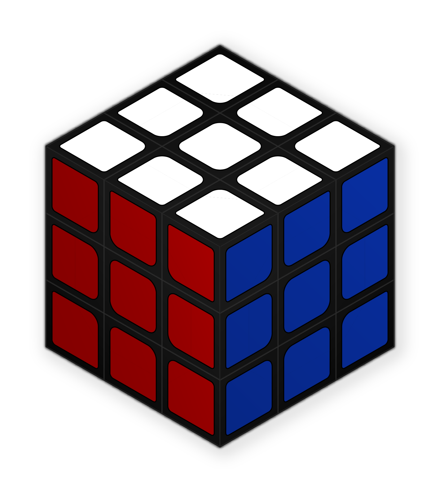

À propos de moi
Sed ut tum ad senem senex de senectute, sic hoc libro ad amicum amicissimus scripsi de amicitia. Tum est Cato locutus, quo erat nemo fere senior temporibus illis, nemo prudentior; nunc Laelius et sapiens (sic enim est habitus) et amicitiae gloria excellens de amicitia loquetur. Tu velim a me animum parumper avertas, Laelium loqui ipsum putes. C. Fannius et Q. Mucius ad socerum veniunt post mortem Africani; ab his sermo oritur, respondet Laelius, cuius tota disputatio est de amicitia, quam legens te ipse cognosces.
Un cube dans l'ordre
Hobbys
- La Musique, tel que jouer de la batterie, de la guitare ou du piano
- La Mixologie, créer des cocktails et des saveurs
- Les Jeux Vidéos et les Jeux de Sociétés
- L'Art, plutôt contemporain
Un cube toujours dans l'ordre